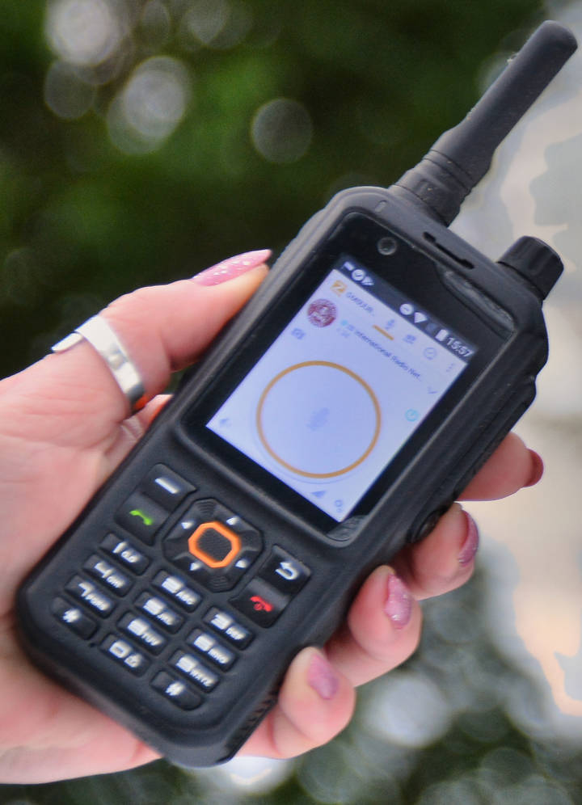

Welcome!


The mission of the International Radio Network is to promote the amateur radio hobby to those interested in radio communications. We welcome licensed and non-licensed operators, giving those with an interest the opportunity to gain experience in radio communications, theory and technology, build fellowship, and have some fun along the way.
Please read on:
• to peruse our FAQ for help setting up and using the network;
• to learn about our connections;
• and to review our net schedule.
You may also:
• register to use the system;
• read about our mission and history;
• and make a donation to help with our operating costs.
Thank you for visiting our site. If you have any questions, please contact us.
Enjoy the system! We look forward to meeting you on the network.
The IRN admin team